Full API Documentation¶
oPDF module¶
Python interface to the C code for oPDF modelling.
It wraps the C functions into python classes with ctypes.
Variables and Constants¶
-
oPDF.Globals¶ Collection of global variables of the module, of class
globals_t. It controls numerical precision, internal units, and cosmology.
-
oPDF.VirTypes¶ Collection of virial definitions. It contains
VirTH: the spherical collapse prediction (i.e, Bryan & Norman 98 fitting).VirB200: the 200 times mean density deifinition.VirC200: the 200 times critical density definition.
-
oPDF.HaloTypes¶ Collection of halo types. It contains
NFWMC: NFW halo parametrized by 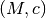NFWRhosRs: NFW, 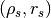NFWPotsRs: NFW, (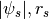), with 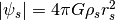.CorePotsRs: Cored Generalized NFW Potential (inner density slope=0), parametrized by ()CoreRhosRs: Cored GNFW,TMPMC: Template profile, parametrizationTMPPotScaleRScale: Template, 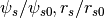PointM: Point Mass at r=0IsothermalK: Isothermal halo, 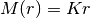
-
oPDF.Estimators¶ Collection of dynamical estimators. It contains
RBinLike: binned radial likelihood.Use
RBinLike.nbin(integer) andRBinLike.logscale(TrueorFalse) to control the number and scale of bins. Since the purpose of the binning is purely to suppress shot noise, a larger number of bins is generally better, as long as it is not too noisy. On the other hand, when the likelihood contours appear too irregular, one should try reducing the number of radial bins to ensure the irregularities are not caused by shot noise. In our analysis, we have adopted 30 bins for an ideal sample of 1000 particles, and 50 bins for 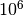 particles in a realistic halo, although a bin number as low as 5 could still work.AD: Anderson-Darling distance.MeanPhaseRaw: Normalized mean phase deviation 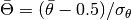, to be compared to a standard normal variable.MeanPhase: 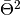, to be compared to a chi-square variable.
Classes¶
Global Parameters¶
-
class
oPDF.globals_t[source]¶ global variables of the module. It controls numerical precision, internal units, and cosmology. The numerical precision for orbit integration is controlled by Globals.tol.rel, which defaults to 1e-3 (Globals.tol.rel=1e-2 should already be sufficient for likelihood inference and phase calculations).
-
set_units(MassInMsunh=10000000000.0, LengthInKpch=1.0, VelInKms=1.0)[source]¶ set system of units. specify Mass in Msun/h, Length in kpc/h, Velocity in km/s.
Example: If you want to use (1e10Msun, kpc, km/s) as units, and you adopt 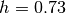 in your model, then you can set the units like below
>>> h=0.73 >>> Globals.set_units(1e10*h,h,1)
That is, to set them to (1e10h Msun/h, h kpc/h, km/s).
Note
- The user should only use Globals.set_units() to change the units, which automatically updates several interal constants related to units. Never try to change the internal unit variables (e.g., Globals.units.MassInMsunh) manually.
- To avoid inconsistency with units of previously loaded tracers, you must do it immediately after importing the :module:`oPDF` module if you need to call
set_units().
-
Halo¶
-
class
oPDF.Halo(halotype=NFWMC, virtype=C200, redshift=0.0, scales=None, TMPid=-1)[source]¶ a general halo describing the potential. It has the following properties
Variables: - pars – raw parameter values. do not change them manually, use
set_param()to set them. - scales – parameter scales. use
set_type()to set them. - virtype – virial definition. One of :const:`VirTypes’.
- type – parametrization type. One of
HaloTypes.
Depending on the type of the halo, some of the following properties may be calculated during
set_param():Variables: - M – mass
- c – concentration
- Rv – virial radius
- Pots – 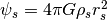.
- Rhos – scale density for NFW
- Rs – scale radius
- RScale – 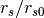 for TMP profile
- PotScale – 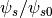 for TMP profile
Initializer: define a halo by specifiying the parametrization, virial definition and redshift of halo
param halotype: halo parametrization, one of the HaloTypesmembersparam virtype: virial definition, one of the VirTypesmembersparam redshift: redshift of halo param scales: scales of halo parameters, array-like, of the same shape as parameters. default to all-ones if None. physical parameters will be params*scales param TMPid: template id. only required when halotype is of template type -
get_current_TMPid()[source]¶ get the id of the template currently loaded in the system.
this func can be used to check whether the loaded template is the template of the current halo, just in case the template does not match
-
set_param(pars=[1.0, 1.0])[source]¶ set the parameters of the halo
pars: parameters describing the halo
-
set_type(halotype=NFWMC, virtype=C200, redshift=0.0, scales=None, TMPid=-1)[source]¶ set the parametrization, virial definition and redshift of halo
halotype: halo parametrization, one of the
HaloTypesmembersvirtype: virial definition, one of the
VirTypesmembersredshift: redshift of halo
scales: scales of halo parameters, array-like, of the same shape as parameters. default to ones if not specified. physical parameters will be params*scales
- pars – raw parameter values. do not change them manually, use
Tracer¶
-
class
oPDF.Tracer(datafile=None, grpname='/', rmin=None, rmax=None, shuffle=True, AddHubbleFlow=False)[source]¶ Tracer: a population of tracer particles.
Variables: - halo – the halo (potential, type
Halo) for the tracer. - lnL – likelihood or distance for the sample from the previous likelihood calculation, depending on estimator.
- nP – number of particles.
- mP – average particle mass.
- data – particle data, numpy record array format. It includes the following fields: (‘haloid’, ‘subid’, ‘flag’, ‘w’, ‘r’, ‘K’, ‘L2’, ‘L’, ‘x’, ‘v’, ‘E’, ‘T’, ‘vr’, ‘theta’, ‘rlim’)
Note
- The w field is the particle mass in units of the average particle mass. These are all ones if no particle mass is given in the datafile.
- the haloid and subid fields are only filled if you have SubID and HaloID datasets in the datafile when loading.
- The E,`theta` and rlim fields are the energy, phase-angle, and radial limits (peri and apo-center distances) of the orbits.These depend on the potential, and are only filled when you have done some calculation in a halo, or have filled them explicitly with
set_phase().
Note
The following members are provided for information, but do not manually assign to them. use
radial_count()andradial_cut()to set them.Variables: - nbin_r – number of radial bins.
- FlagRLogBin – whether radial binning is in logspace.
- RadialCount – counts in radial bins.
- rmin – lower radial cut.
- rmax – upper radial cut.
Initializer: loading a tracer from a datafile. grpname specifies the path to the dataset inside the hdf5 file, in case the file contains multiple datasets.
optionally, can apply radial cut given by rmin and rmax
if AddHubbleFlow=True, then also add hubble flow to the loaded velocity (only support redshift 0 data now).
Note
The datafile should contain physical positions and velocities of the tracer particles, relative to the center of the halo. By default, the tracer particles will be shuffled after loading, for easy creation of subsamples by copying later. To keep the original ordering of particles, set shuffle=False
-
NFW_fit(x0=[1, 1], minuittol=1)[source]¶ to fit an NFW density PDF with maximum likelihood.
Note
You need the iminuit python package before you can use this function. If you don’t have that, you need to comment out the iminuit related imports in the header of oPDF.py.
Parameters: - x0 – initial value of halo parameters. the interpretation of them depends on the halotype and scales of the tracer’s halo. see Tracer.halo of
Tracerand halo.type, halo.scales ofhalo. - minuittol – tolerance of minuit to consider convergence. Convergence is defined when the estimated distance to minimum edm<1e-4*minuittol*0.5
Returns: results will be printed on screen. also return minuit result and the minuit minimizer. Please consult the iminuit documentation for the iminuit outputs.
Note
This is only intended for fitting the Dark Matter density profile to get the NFW parameters. The tracer particle mass should have been properly assigned or adjusted, so that mP*number_density=physical_density. If you have sampled n particles from the full sample of n0 particles, remember to adjust the mP of the sample to be mP0*n0/n, so that total mass is conserved.
- x0 – initial value of halo parameters. the interpretation of them depends on the halotype and scales of the tracer’s halo. see Tracer.halo of
-
NFW_like(pars=[1, 1])[source]¶ NFW log-likelihood. the halo should have been set to one of the NFW types before calling this.
pars are the parameters to be passed to the halo.
return log(likelihood)
-
TSprof(pars, proxy='L', nbin=100, estimator=MeanPhaseRaw)[source]¶ calculate the likelihood inside equal-count bins of proxy.
return the loglike or f.o.m. for the estimator in each bin, and the bin edges.
proxy and nbin can also be of len>1; in that case, use self.Views[i].Views[j].lnL and self.Views[i].Views[j].proxybin to get the likelihood and bins in each node
-
TSprofCum(pars, proxy='r', bins=100, estimator=AD)[source]¶ cumulative TS profile. reuturn bin edges, ts, counts
-
copy(offset=0, n=0)[source]¶ create a subsample by copying n particles starting from offset. if n==0, then copy all the particles starting from offset.
Only particles and their radial limits are copied. The halo, RadialCounts and Views are not copied into the new sample.
return the subsample
-
create_nested_views(viewtypes='EL', nbins=[10, 10])[source]¶ create nested views, i.e., create views according to first proxy, then create sub-views for each view according to the second proxy and so on.
viewtypes can be one, two or more proxies, e.g, ‘E’,’EL’,’LEr’.
len(nbins) must match len(viewtypes).
the energy need to be set before calling if creating E views
-
create_views(n=10, proxy='L')[source]¶ sort the particles according to proxy, and divide into n equal-size subsamples sequentially. these subsamples does not copy the particle data, but only points to the corresponding segments of data in the parent sample, so they are called views, and can be accessed through Tracer.Views[i] from the parent sample. the energy need to have been set before calling if proxy is E
-
dyn_fit(estimator=RBinLike, x0=[1, 1], xtol=0.001, ftol_abs=0.01, maxiter=500, verbose=0)[source]¶ dynamical fit with the given estimator
- Parameters
estimator(Estimator): estimator to use. select one from
Estimators.x0(array-like): initial parameter values
xtol: tolerance in x to consider convergence
ftol_abs: tolerance in function values to consider convergence.
convergence is reached when both dx<xtol and df<ftol_abs between subsequent steps in the search.
maxiter: maximum number of iterations
verbose: whether to print during each step.
- Returns
- [x, fval, status_success]
x(array): the best fit parameter
fval(float): log-likelihood or fig of merit, depending on estimator
status_success(bool): whether the search converged successfully, 1 if yes, 0 if no.
-
gen_bin(bintype, nbin=30, logscale=True, equalcount=False)[source]¶ return bin edges. divide into nbin bins, with nbin+1 edges.
-
like_eval(estimator)[source]¶ evaluate likelihood or TS with the given estimator.
This is a low-leve function. One has to call
set_phase()before calling this. Uselikelihood()which combineslike_eval()andset_phase()automatically, unless you do want to call them separately.Parameters: estimator – estimator to use for the likelihood or TS calculation. Returns: the likelihood (if estimator= Estimators.RBin) or TS value (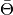 forEstimators.MeanPhaseRaw, forEstimators.MeanPhase, or AD distance forEstimators.AD).
-
likelihood(pars=[1, 1], estimator=MeanPhaseRaw, auto_rbin=True)[source]¶ calculate likelihood or test-statistic. it automatically prepares orbits and then calculates the likelihood or TS (i.e., it combines
set_phase()andlike_eval()).Parameters: - pars – parameter values
- estimator – estimator to use for the likelihood or TS calculation.
- auto_rbin – whether to prepare radial bins automatically. Only relevant if you are using Estimators.RBin. default to True. set to false if you have prepared the bins manually (by calling
radial_count()).
Returns: the likelihood (if estimator=
Estimators.RBin) or TS value ( forEstimators.MeanPhaseRaw, forEstimators.MeanPhase, or AD distance forEstimators.AD).
-
load(datafile, grpname='/', AddHubbleFlow=False)[source]¶ load particles from datafile. If the datafile contains multiple datasets, grpname can be further used to specify the path of the dataset in the hdf5 file.
-
mark_phase_mass(m0=100.0, verbose=0)[source]¶ estimate mass 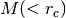 using the “PhaseMark” method.
Parameters: - m0 – the initial guess of the mass, optional.
- verbose – whether to print diagnostic information, default no.
Returns: r,m,ml,mu,flag,flagl, flagu
r: the characteristic radius of the tracer in between rlim
m: the mass of the halo contained inside r
ml: 1-sigma lower bound on m
mu: 1-sigma upper bound on m
flag: whether m and r have converged (0:no; 1:yes; 2: no solution to the phase equation, but closest point found).
flagl: whether ml has converged
flagu: whether mu has converged
-
nested_views_like(estimator=AD)[source]¶ evaluate likelihood in at the deepest views, and return the sum of them. The likelihood for each view is also availabel in Views[i].lnL
-
phase_density(proxy='E', bins=100, method='hist', logscale=False, weight=False, return_data=False)[source]¶ estimate density in proxy-theta space
-
phase_image(pars, proxy, bins=30, logscale=True)[source]¶ plot an image of the particle distribution in proxy-theta space :param pars: parameters specifying the potential :param proxy: proxy to use for the proxy-theta plot, ‘E’ or ‘L’. :param bins: binning in proxy. if an integer, create the input number of bins. If an array, use the array as the bins. :param logscale: True or False, whether to bin in logscale or not when bins is an integer.
-
phase_mark_fit(par0=[1, 1], nbin=2, proxy='r', equalcount=True)[source]¶ fit halo potential with phase mark. The halo of the tracer need to be initialized to the desired type before fitting.
Parameters: - par0 – initial parameter values. len(par0) also gives the number of free parameters.
- nbin – number of bins. if nbin<len(par0), then the number of bins is set to len(par0) to avoid overfitting.
- proxy – the tracer property used to bin the sample into subsamples. ‘r’ or ‘L’.
- equalcount – whether to use equalcount bins (each subsample has equal number of particles) or logarithmic bins in proxy.
Returns: par: best-fit parameter
Cov: covariance matrix of the parameters
data: phase-mark data, array of shape [nbin, 7]. each column is the fitting result [r,m,ml,mu,flag,flagl, flagu] to one bin, with (r,m) giving the radius and mass, (ml,mu) giving the lower and upper bound on mass, (flag, flagl, flagu) specifying whether the fit converged for mass and its lower and upper bounds (0:no; 1:yes; 2: no solution to the phase equation, but closest point found).
Note
if the code complains about curve_fit() keyword error, you need to upgrade your scipy to version 0.15.1 or newer.
-
phase_mass_bin(xlim, proxy='r', m0=100.0, verbose=0)[source]¶ estimate mass for tracer with property “proxy” selected in between xlim, using the “PhaseMark” method.
Parameters: - xlim – the range of property to select the tracer.
- proxy – the property to select the tracer, ‘r’ or ‘L’
- m0 – the initial guess of the mass, optional.
- verbose – whether to print diagnostic information, default no.
Returns: r,m,ml,mu,flag,flagl, flagu
r: the characteristic radius of the tracer in between rlim
m: the mass of the halo contained inside r
ml: 1-sigma lower bound on m
mu: 1-sigma upper bound on m
flag: whether m and r have converged (0:no; 1:yes; 2: no solution to the phase equation, but closest point found).
flagl: whether ml has converged
flagu: whether mu has converged
-
plot_TSprof(pars, proxy='L', nbin=100, estimator=MeanPhaseRaw, xtype='percent-phys', linestyle='r-')[source]¶ plot the TS profile in equal-count bins of proxy.
xtype: can be one of ‘percent’, ‘physical’, and ‘percent-phys’.
when xtype=’percent’, plot the x-axis with percents.
if xtype=’phys’, plot x-axis with physical values.
if xtype=’percent-phys’, plot xaxis in percent scale but label with physical values.
-
predict_radial_count(nbin=100, logscale=True)[source]¶ predict radial counts according to oPDF.
set_phase()must have been called prior to calling this.return predicted counts.
-
radial_count(nbin=10, logscale=True)[source]¶ bin the particles radially, to be used for radial likelihood calculation. The histogram will be recorded in Tracer.RadialCount[].
Note
This function is automatically called by the relevant likelihood functions such as
likelihood(),dyn_fit(),scan_confidence()when the estimator isEstimators.RBinLike. In these cases, nbin and logscale will be determined according toEstimators.RBinLike.nbinandEstimators.RBinLike.logscale. So usually you do not need to call this function explicitly.
-
radial_cut(rmin=None, rmax=None)[source]¶ cut the tracer with bounds [rmin, rmax]. if only rmin or rmax is given, the other bound is not changed.
Note
This function not only selects particles within (rmin,rmax), but also sets the radial boundary for the dynamical model, so that only dyanmical consistency inside the selected radial range is checked. So always use this function if you want to change radial cuts. This function is automatically called when initializing a
Tracerwith rmin/rmax.
-
resample(seed=100)[source]¶ create a bootstrap sample (sampling with replacement) of the same size from tracer return the new sample
-
scan_confidence(estimator, x0, ngrids=[10, 10], dx=[0.5, 0.5], logscale=False, maxlike=None)[source]¶ scan significance levels around parameter value x0.
it scans ngrids linear bins from x0-dx to x0+dx if logscale=False, or ngrids log bins from log10(x0)-dx to log10(x0)+dx if logscale=True.
If maxlike is given, it is interpreted as the global maximum log-likelihood, and is used to determine significance for RBinLike estimator; otherwise the maximum likelihood is automatically scanned for RBinLike.
Returns: [x,y,sig,like] x,y: the scanned grid points, vectors.
sig: the significance on the grids, of shape [len(x),len(y)]
like: the likelihood or figure of merits on the grids. same shape as sig.
-
scan_like(estimator, x, y)[source]¶ scan a likelihood surface.
x,y are the vectors specifying the binning along x and y dimensions
- return the likelihood value z on grids, to be used for contour plots as
>>> contour(x,y,z)
-
select(flags)[source]¶ select particles according to flags array, into a new sample.
Note
- Same as
copy(), only particles and their radial limits are copied. The halo, RadialCounts and Views are not copied into the new sample. - When doing dynamical tests, one should avoid distorting the radial distribution with any radial selection. One can still apply radial cuts, but should only do this with the
radial_cut()function. So never useselect()on data[‘r’].
- Same as
-
set_orbits(set_phase=True)[source]¶ prepare particle orbits inside the attached halo
- set_phase: whether to calculate the phase-angle of each particle.
- phase angle is needed by AD and MeanPhase estimators, but not by RBinLike see estimator.need_phase for each estimator.
-
set_phase(pars, need_theta=True)[source]¶ prepare the phases for phase-related calculations such as like_eval or phase_density
-
shuffle(seed=100)[source]¶ shuffle particles randomly.
seed: optional, seeds the random number generator for the shuffle
-
solve_meanphase(x0, y0=0.0, verbose=0)[source]¶ find the halo parameter x at which MeanPhaseRaw(x)=y0.
Parameters: - x0 – the initial value of x to start the search.
- y0 – the mean phase value, so that MeanPhaseRaw(x)=y0.
- verbose – 0 or 1, whether to print additional convergence information.
Returns: (x,y,flag).
x: solution
y: MeanPhaseRaw(x)-y0
- success flag:
0: fail to converge; 1: successfully found solution; 2: failed to find solution for MeanPhaseRaw(x)-y0=0, but found minimum for (MeanPhaseRaw(x)-y0)**2.
Note
The tracer halo type must be set before invoking this function.
- halo – the halo (potential, type
Utility functions¶
These utility functions may or may not be related to the oPDF method. Some of them are just general-purpose plotting or monitoring functions.
-
myutils.Chi2Sig(x, dof)[source]¶ convert chi-square value to significance level, for dof degrees of freedom
-
class
myutils.ProgressMonitor(total_steps, total_show=100, init_show=0)[source]¶ monitor progress of your loops
init_show: initial value progress percentage, set to 0 if no reason total_steps: maximum iteration steps to monitor total_show: number of revealing times
-
myutils.contour_handle(color, linestyle='solid')[source]¶ return a patch object to be used for labelling patch objects in legends
-
myutils.create31fig(sharex=True, sharey=False, figsize=(8, 8))[source]¶ create a figure with 3 tightly packed subplots
-
myutils.density_of_points(data, bins=100, method='kde', weights=None)[source]¶ estimate density of points with kde or histogram2d
data: should be shape [2,n] array
bins: can be an integer or [nx,ny] for number of bins, an ndarray or a list of two arrays for bin edges
method: ‘kde’ or ‘hist’, kernel-density-estimate or 2d-histogram estimate
weights: whether to use weights or not. currently only supports hist method.
- return: (X,Y,Z)
- ready to be used for contour plots as contour(X, Y, Z). X and Y are mid points of the bins on which Z is calculated.
-
myutils.get_extent(X, Y)[source]¶ get extent for X,Y vectors or meshgrids.
- the output is (xmin,xmax,ymin,ymax), the edge-padded boudaries,
- assuming X,Y specifies the mid points of bins and uniformly spaced.
can be used to specify extent for imshow()
-
myutils.percentile_contour(X, Y, Z, percents=0.683, colors=None, fill=False, linestyles='solid', **kwargs)[source]¶ plot contour at specific percentile levels
X,Y can be both 2-d arrays as Z, or 1-d array specifying the column(horizontally varying) and row coordinates for Z.
percents can be a list, specify the contour percentile levels
colors should be a tuple, e.g, (r,)
fill: bool, whether to plot filled contours
kwargs specify linestyles
- return:
- a handle artist of the same linestyle (but not the contour object) to be used in legends
-
myutils.plot_cov_ellipse(cov, pos, nstd=1, fill=False, ax=None, **kwargs)[source]¶ Plots an nstd sigma error ellipse based on the specified covariance matrix (cov). Additional keyword arguments are passed on to the ellipse patch artist.
Parameters
cov : The 2x2 covariance matrix to base the ellipse on
- pos : The location of the center of the ellipse. Expects a 2-element
- sequence of [x0, y0].
- nstd : The radius of the ellipse in numbers of standard deviations.
- Defaults to 1 standard deviations.
ax : The axis that the ellipse will be plotted on. Defaults to the current axis.
Additional keyword arguments are pass on to the ellipse patch.
- Returns
- A matplotlib ellipse artist
-
myutils.shiftedColorMap(cmap, start=0, midpoint=0.5, stop=1.0, name='shiftedcmap')[source]¶ Function to offset the “center” of a colormap. Useful for data with a negative min and positive max and you want the middle of the colormap’s dynamic range to be at zero
Input
cmap : The matplotlib colormap to be altered
- start : Offset from lowest point in the colormap’s range.
- Defaults to 0.0 (no lower ofset). Should be between 0.0 and midpoint.
- midpoint : The new center of the colormap. Defaults to
- 0.5 (no shift). Should be between 0.0 and 1.0. In general, this should be 1 - vmax/(vmax + abs(vmin)) For example if your data range from -15.0 to +5.0 and you want the center of the colormap at 0.0, midpoint should be set to 1 - 5/(5 + 15)) or 0.75
- stop : Offset from highets point in the colormap’s range.
- Defaults to 1.0 (no upper ofset). Should be between midpoint and 1.0.
Credit: http://stackoverflow.com/questions/7404116/defining-the-midpoint-of-a-colormap-in-matplotlib